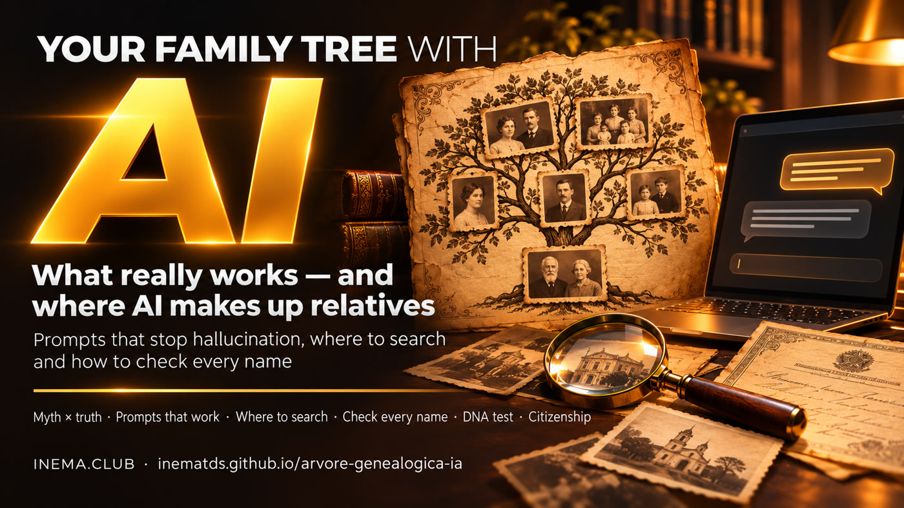
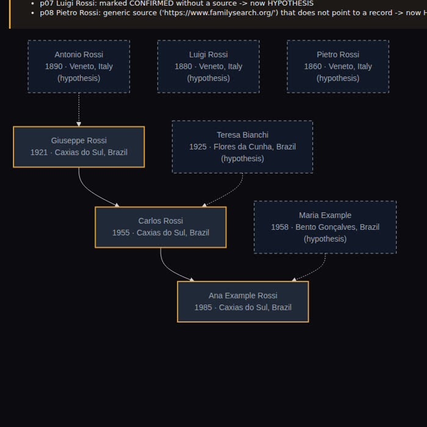

The viral video promises a complete family tree, unknown relatives, and even citizenship. Part of it works. The rest is where AI hallucinates.

This is a free guide to building your family tree using an AI chat (ChatGPT, Claude, Gemini) the right way. It explains what the viral video “ChatGPT finds your relatives” gets right and where AI makes people up. It includes 8 ready-to-use prompts that require AI to show its proof, a list of archives where you can do real research, and a checklist for verifying every name. All you need is an AI chat and, if you want a visual family tree, Python 3.
Four requests to the chat and a promise of citizenship. See what holds up and why.
| Promise | Does it work? | Why |
|---|---|---|
| 1. "Ask me everything and build my initial family tree" | ✅ Yes | AI only organizes what you told it. There's nothing to make up. |
| 2. "Tell the story of my family line based on my surname" | ⚠️ Half-truth | The origin of the surname is generic. Having the same last name doesn’t mean you’re in the same family. |
| 3. "Research records and find relatives I don’t know about" | ❌ Makes things up | Good databases require a login or are paid, and many records (in Brazil and across Latin America) aren’t indexed online. With common names, AI mixes up people with the same name and fills in the gaps with plausible people. "Names you’ve never heard of" are exactly the danger. |
| 4. "Build the complete visual family tree" | ✅ Draws | But the diagram doesn’t make the names from step 3 true. |
| + "You’re going to find a citizenship" | ❌ Exaggeration | Citizenship is proven with certificates. And the rules have gotten stricter: Italy limited citizenship by descent in 2025 (Law 74/2025), and Portugal changed its nationality law in 2025–2026, with parts challenged in the Constitutional Court. Information verified in November 2026: confirm with the consulate. |
A language model writes the most likely text, not the most truthful. Without finding the record, the “likely” answer is a list of names that look real.
Organize what you know, read old handwriting, translate Latin and Italian from records, suggest where to look, and put together a list of documents.
Only a genealogy DNA test can find cousins you don't know without starting from a document. AI can't do that.
Start with living relatives, move on to documents, and only add people to the tree when you have proof.
Nothing paid is required.
ChatGPT, Claude, or Gemini. For step 5, turn on web search in the chat (the search button or agent mode, if your plan includes it). To read documents, send the photo using the attachment clip.
Free, with registration, at familysearch.org. It’s the largest free collection of records, including records from Brazil.
Only for step 8. It comes with Linux; on Windows and Mac, install it from python.org (on Windows, tick Add python.exe to PATH on the installer's first screen). Download the project using the green button Code → Download ZIP on GitHub and unzip it, or use git:
git clone https://github.com/inematds/arvore-genealogica-ia cd arvore-genealogica-ia
The prompts are also in the folder prompts/ from the repository. They all follow the same rule: without proof, it doesn't go in.
The files in the prompts/ and docs/ folders are in Portuguese; every prompt and every list is translated on this page.
Start with living relatives. AI asks the questions and prepares a guide for you to talk with your oldest relative.
Everything becomes a table with a source column and a status column. It’s the one the script draws in step 8.
CSV is a text table with columns separated by commas. To save it: copy the response, paste it into Notepad (Windows) or TextEdit in plain text mode (Mac), and save it as my-family.csv inside the project folder. Or paste it into Google Sheets and download it as .csv. In Notepad, under "Save as type", choose "All files" (otherwise it becomes .csv.txt), and leave out the ``` lines if the chat adds them (the script ignores them too). The script accepts commas or semicolons.
AI is excellent at this: difficult handwriting, Latin, Italian, German. You verify it against the image.
AI suggests archives and registry offices. Open each link before you trust it.
The safe version of "find relatives I don’t know about." Use it in a chat that can browse the web: in the ChatGPT app, tap the + next to the text box and choose web search (or agent mode, if your plan includes it). Button names change between app versions.
Already have a list that AI “found”? Open a new chat (without the history) and ask for an audit.
AI organizes the process; the law and the consulate make the decision. Ask for the date of the information. The prompt terms (full-text certificate, Hague Apostille, sworn translation) are in the glossary.
Open a terminal in the project folder: on Windows, open the folder in File Explorer, click the address bar, type powershell and press Enter; on Mac, right-click the folder → Services → New Terminal at Folder; on Linux, right-click → Open in terminal. Then run the script with the table from step 2. It also checks that anyone marked CONFIRMED without a source (or with only the website address) becomes a hypothesis, and flags impossible ages for a father or mother. The script reads the English columns from step 2 and answers in English.
# Mac and Linux python3 scripts/arvore.py my-family.csv --output my-tree.html # saves my-tree.html python3 scripts/arvore.py my-family.csv --only-confirmed --output only-proof.html python3 scripts/arvore.py modelos/people.csv --output example.html # fictional example family # Windows (PowerShell) py scripts\arvore.py my-family.csv --output my-tree.html py scripts\arvore.py my-family.csv --only-confirmed --output only-proof.html py scripts\arvore.py modelos\people.csv --output example.html
The script only saves the file: double-click my-tree.html in the folder to open it in your browser (it needs an internet connection to render). No computer? Ask the chat: "draw this table in Mermaid, HYPOTHESIS with a dashed border, without adding anyone" and paste the result into mermaid.live to see the drawing. To move the tree to a genealogy website, the standard format is GEDCOM (.ged): build the tree directly on FamilySearch or MyHeritage, or ask the chat to convert the table to GEDCOM and import it on the site.
Start at home: certificates, work records, passports, letters, and photos with notes on the back. Then check these archives.
| Where | What it has | Cost |
|---|---|---|
| FamilySearch (familysearch.org) | Civil and parish records from several states in Brazil and around the world. Many are only available as images, with no name search, so you have to browse through them. | Free |
| Civil registry office (Brazil: cartório) | The full-text certificate (inteiro teor, a faithful copy of the book) is the one that counts for citizenship. Request it at the registry office or online. | Paid |
| Parishes and diocesan offices | Baptisms, marriages, and deaths from before civil registration became widespread. | Varies |
| State archives and the National Archives (Brazil) | Immigration, naturalization, probate records. The National Archives holds passenger lists for ships that arrived in Rio. | Free |
| Museu da Imigração (São Paulo, Brazil) | Records of the immigrant hostel (Hospedaria de Imigrantes) and passenger lists. | Free |
| United States: NARA, Ellis Island passenger search, state vital records offices | National Archives (census, naturalization, ship lists), the Statue of Liberty–Ellis Island Foundation passenger database (arrivals in New York), and each state’s vital records office for birth, marriage and death certificates. | Mostly free |
| Your country’s civil registry and national archive | The list above is strongest for Brazil. In any country, the civil registry and the national archive hold births, marriages, deaths and immigration. Ask the chat for your country’s list with prompt 4 and open every link. | Varies |
| Hemeroteca Digital (Brazil’s National Library) | Old newspapers: marriages, deaths, ship arrivals. | Free |
| Antenati Portal (Italy) | Civil records from Italian state archives. | Free |
| Digitarq (Portugal) | Digitized parish records from district archives. | Free |
| Matricula (Germany, Austria, Poland) | Catholic parish registers. | Free |
| Szukaj w Archiwach and Geneteka (Poland) | Digitized Polish state archives and a volunteer-built index of parish and civil records. | Free |
| DNA test (MyHeritage, Ancestry, and others) | Compare your DNA with that of other people who have been tested and find real cousins. Each company compares results against its own database; some sites accept DNA files from another company (upload), which broadens the search. DNA is sensitive data: read the privacy policy. | Paid |
Check each new person against this list. Without every item, they remain a HYPOTHESIS.
□ Is there a source (record link or document)?
□ Did I open the link myself, and does it show this person?
□ Do the name, date, and place match (including old spellings)?
□ Do the parents' ages make sense?
□ Does the record name parents or a spouse already confirmed? This is the link that distinguishes a relative from someone with the same name.
□ For the link that leads to citizenship, are there two documents?
A link that doesn’t open or shows someone else · “according to public records” without saying which ones · dates that are too round · people who fit your story perfectly · the source changes when you ask again.

scripts/arvore.py with the fictional example family: confirmed people have amber borders, hypotheses have dashed borders. "Luigi" was marked as confirmed without a source, and the script downgraded him.So no one gets stuck along the way.
When AI makes something up that looks real: a name, a date, a record that doesn’t exist.
A different person with the same name. The biggest risk in genealogy: finding the wrong "José Rossi."
A record you can find by typing in a name. Not indexed = only a photo of the book, so you have to browse page by page.
A baptism, marriage, or death recorded in the church book. Before civil registry offices, it was the main record.
A certificate that copies the complete record from the registry office book, including parents, grandparents, and notes. It’s the one that counts for citizenship.
A certificate added by an authorized office that makes a document from one country valid in another (in Brazil, a notary; in the US, the Secretary of State of the state that issued the document).
Official translation, done by a registered public translator, required for citizenship applications.
Table saved as text, with columns separated by commas. Opens in Excel and Google Sheets.
Mermaid is a language that turns text into a diagram. GEDCOM (.ged) is the standard file format for moving a family tree from one genealogy site to another.
Real genealogy takes time. That’s good: every name you add stays.